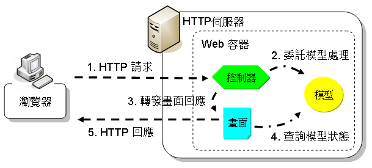

|
|
在
Web
應用程式的領域中，包括了網頁的呈現與程式碼的行為，網頁的呈現可交由網頁美術人員執行，程式碼的撰寫則由程式設計人員負責，各司其職，為了
不在網頁中添
加不必要的程式碼來干擾網頁美術人員的設計，也為了不在程式碼中安插麻煩的字串來輸出HTML等內容，Web應用程式世界常使用的架構是 MVC/Model 2。 MVC指的是Model/View/Controller， 也就是將Web應用程式的組成劃分為模型、畫面與控制器三 個角色，最原始的MVC定義是指桌面應用程式上的架構，這邊不予探討，Web應用程式借鏡桌面應用程式MVC架構，取其 Model/View/Controller的職責劃分，並修改流程為適用於HTTP請求/回應特性，基本上你也可以稱這個修改後的架構為 MVC，或者是 Model 2（是的！還有一個架構稱之為Model 1，之後會看到），或併稱為MVC/Model 2。 在MVC/Model 2中，將Web應用程式劃分為模型、畫面與控制器：
一個大致的流程示意如下所示：  如果使用基於Java技術的Servlet/JSP來實現以上的架構，控制器通常是由Servlet來擔任，模型則是個Java物件，而畫面 則由JSP來實現。 舉個例子來說，如果你想要依使用者發送的名稱來提取個別訊息顯示，以下是個簡單的MVC/Model 2實現：
package cc.openhome; 其中Hello的 職責劃分是模型，根據使用者的user請求參數不同，會取得不同的訊息給message參考：
package cc.openhome; 依上，如果user 請求參數是caterpillar就會取得"Hello"字串，如果是caterpillar，就會取得"Welcome"字串， 在取得訊息之後，先前擔任控制器的Servlet會轉發給畫面：
<%@page contentType="text/html" pageEncoding="UTF-8"%> 畫面會取得使用者的訊息，並使用HTML來顯示，所以，如果你的請求是： http://localhost:8080/ServletDemo/hello.do?user=caterpillar
則你會得到以下的HTML畫面： <html>
<head> <meta http-equiv="Content-Type" content="text/html; charset=UTF-8"> <title>caterpillar</title> </head> <body> <h1>Hello, caterpillar!</h1> </body> </html> 上面的範例有一些還沒有介紹的特性，不過重點在於，經由適當的職責劃分，控制器與模型不用處理HTML的輸出，而JSP也不會被Java程式 碼干擾，當 然，切割呈現邏輯與商務邏輯並非僅是MVC/Model 2的作用，在更複雜的情境時，控制器、模型、畫面會各司其責，將會使得程式更易於維護、更不會因為需求變更而作出過大的變動。 |